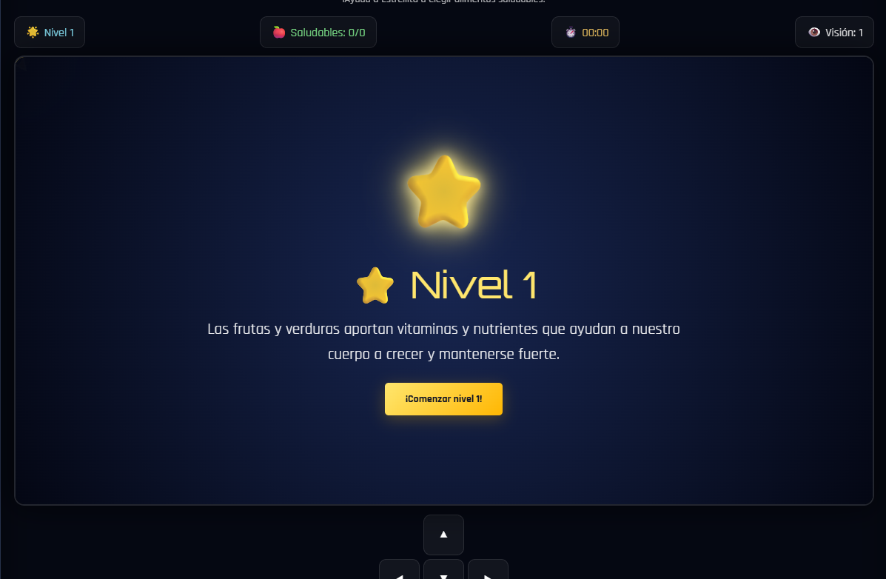
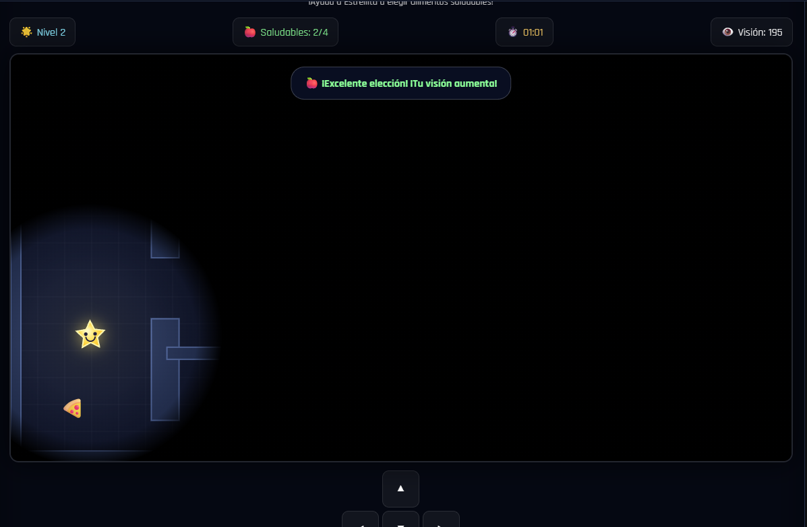
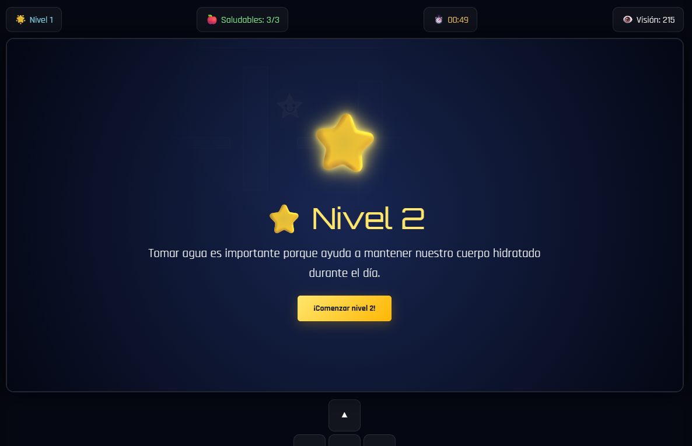

HEALTHYSTAR
Ayuda a Estrellita a encontrar alimentos saludables, superar los laberintos y completar todos los niveles.

JUEGA HEALTHY STAR
Encuentra todos los alimentos saludables antes de que se termine el tiempo.
⭐ Healthy Star
Usa las flechas del teclado o los botones para moverte.
SOBRE EL JUEGO
¿QUÉ ES HEALTHY STAR?
Healthy Star es un videojuego educativo en el que el jugador controla a Estrellita dentro de diferentes laberintos. El objetivo es encontrar y consumir todos los alimentos saludables antes de que se termine el tiempo. Durante la aventura también aparecen alimentos poco saludables que pueden afectar negativamente la visión y la puntuación.
OBJETIVO
Encontrar todos los alimentos saludables de cada nivel antes de que termine el tiempo.
REGLAS
- Controlar a Estrellita por el laberinto.
- Encontrar todos los alimentos saludables.
- Evitar los alimentos poco saludables.
- Los alimentos saludables aumentan la visión.
- Los alimentos poco saludables reducen la visión.
- Completar los cinco niveles.
- Superar cada nivel antes de que termine el tiempo.
CONTROLES
↑ ↓ ← →
Utiliza las flechas del teclado para mover a Estrellita. También puedes utilizar los botones de dirección que aparecen debajo del juego.
SISTEMA DE VISIÓN
Cada nivel comienza con un radio de visión determinado. Al encontrar alimentos saludables la visión aumenta. Al recoger alimentos poco saludables la visión disminuye.
LOS 5 NIVELES
FRUTAS Y VERDURAS
Las frutas y verduras aportan vitaminas y nutrientes que ayudan a nuestro cuerpo.
HIDRATACIÓN
Aprende la importancia de mantener nuestro cuerpo hidratado durante el día.
ALIMENTACIÓN VARIADA
Descubre la importancia de consumir diferentes tipos de alimentos.
MEJORES ELECCIONES
Aprende a diferenciar opciones nutritivas de alimentos con demasiado azúcar.
HEALTHY STAR
Supera el reto final y demuestra todo lo aprendido durante la aventura.
CONOCE A ESTRELLITA
ESTRELLITA
La protagonista de Healthy Star. Debe recorrer los laberintos y tomar buenas decisiones alimentarias.
ALIMENTOS
Los alimentos saludables ayudan a aumentar la visión, mientras que los alimentos poco saludables reducen la visión.
GALERÍA DEL JUEGO

